Artigos
Entre-vista com as coisas
p.a.c.i.f.i.c.a.ç.ã.o
Enquadrando um terrorista
Não você/Como você
A irreverência como política
Labirintos da Terra Brazylis
Diário de uma viagem de ônibus em israel
Narrativa Clássica
A difícil relação entre ver/ouvir
O cinema experimental na era do capitalismo flexível
Concepção Leônica Rodrigal Colorífera
A Ascensão do Criptóptico
Vício Inerente
Cinema indígena e trânsitos da representação
O sentido da tela preta em Orestes de Rodrigo Siqueira
Cinegrada
404
Página não encontrada